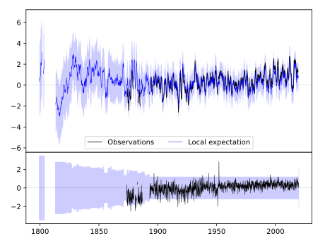
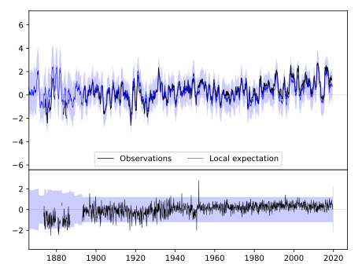
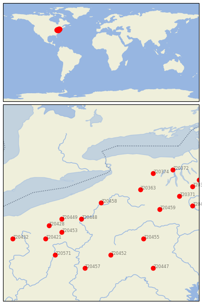

WARREN [USA]


| Neighbour | Name | Country | Distance | Lon/Lat | Years |
|---|
| 720458 | WARREN | USA | 0 | -79.2, 41.9 | 1873-2019 |
| 720448 | FRANKLIN | USA | 74 | -79.8, 41.4 | 1893-2019 |
| 720363 | ANGELICA | USA | 108 | -78.0, 42.3 | 1854-2019 |
| 720449 | GREENVILLE 2 NE | USA | 114 | -80.4, 41.4 | 1871-2019 |
| 720453 | NEW CASTLE 1 N | USA | 141 | -80.4, 41.0 | 1893-2019 |
| 720459 | WELLSBORO 4 SW | USA | 150 | -77.4, 41.7 | 1893-2019 |
| 720428 | WARREN 3 S | USA | 154 | -80.8, 41.2 | 1882-2019 |
| 720455 | STATE COLLEGE | USA | 163 | -77.9, 40.8 | 1882-2019 |
| 720374 | HEMLOCK | USA | 165 | -77.6, 42.8 | 1893-2019 |
| 720452 | JOHNSTOWN | USA | 179 | -78.9, 40.3 | 1893-2019 |
| 720421 | MILLPORT 4 NE | USA | 187 | -80.9, 40.8 | 1893-2019 |
| 720371 | ELMIRA | USA | 199 | -76.8, 42.1 | 1852-2019 |
| 720372 | GENEVA RSCH FARM | USA | 212 | -77.0, 42.9 | 1852-2019 |
| 720571 | WELLSBURG WTR TRMT P | USA | 213 | -80.6, 40.3 | 1877-2019 |
| 720457 | UNIONTOWN 1 NE | USA | 226 | -79.7, 39.9 | 1877-2019 |
| 720456 | TOWANDA 1 S | USA | 232 | -76.4, 41.8 | 1893-2019 |
| 720376 | ITHACA CORNELL UNIV | USA | 237 | -76.4, 42.4 | 1827-2019 |
| 720432 | WOOSTER EXP STN | USA | 256 | -81.9, 40.8 | 1864-2019 |
| 720369 | CORTLAND | USA | 258 | -76.2, 42.6 | 1892-2019 |
| 720447 | CHAMBERSBURG 1 ESE | USA | 259 | -77.6, 39.9 | 1858-2019 |